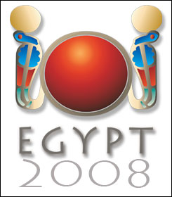

Primeras Olimpiadas Nacionales de Informática
En septiembre de 2005 escribí por primera vez sobre la IOI (Olimpiada Internacional de Informática), luego comenté sobre mis dudas con respecto a la participación de Chile en la IOI 2006.
La verdad es que la participación de Chile en este evento internacional siempre ha sido en forma semi oficial (y bastante poco clara en mi opinión).
Pero eso ya es historia, ahora por fin vamos a tener una olimpiada nacional de Informática como corresponde, la que permitirá seleccionar a nuestra selección que nos representará en Egipto en la IOI 2008. Gracias al esfuerzo de los hermanos Israel y Cristobal Leiva, quienes han movido organizaciones y conseguido el apoyo oficial del ministerio de educación, este año tendremos por primera vez este evento como corresponde.
Por fin tendremos la oportunidad de seleccionar a nuestros mejores jóvenes en informática para que participen en este evento, que ofrece muchas oportunidades para estudiar a los jóvenes que participan en esta competencia internacional (a nivel de becas y oportunidades de trabajo).
Conocí a Israel y Cristobal en Buin el año pasado, antes de que partieran a representar a nuestro país en la IOI 2007, la experiencia no fue la mejor, en gran parte porque este evento era manejado de una forma inadecuada. Nos encontramos en BlogPower donde intercambiamos y aprovechamos de promover este evento en otros espacios, lo que ha tenido buena acogida.
Les pedí que me respondieran algunas preguntas con respecto a su experiencia en este tema y sobre la organización de la IOI, a continuación les dejo este intercambio con los organizadores de la ONI, un ejemplo de jóvenes emprendores que deberían hacernos sentir orgullosos:
Pregunta: ¿Cuales son sus edades muchachos?
Respuesta: Tenemos 18 años, cerca de cumplir 19.
P: ¿Donde viven?
R: Vivimos en la Avenida Manuel Rodríguez de la ciudad de Buin.
P: ¿Cómo se interesaron en la informática?
Nuestro interés por la informática surgió luego de tener acceso a internet en el computador de mi casa, ya que antes de eso lo usabamos solo para jugar. Internet fue, en cierto modo, la puerta de acceso a una enormidad de información y posibilidades.
P: ¿Cómo fue su experiencia en la IOI 2007?
R: Nuestra experiencia en Croacia fue, por sobre todo, muy enriquecedora en muchos ámbitos como el intercambio cultural, la visión de otras realidades y obviamente en el tema informático. Fue una oportunidad excepcional para ver la gran potencialidad que tiene el desarrollo de software a nivel mundial y el impulso de éste en la juventud.
Pero no todo fue color rosa. Ya que como en Chile no había ningún tipo de Olimpiada Informática para jóvenes de Enseñanza Media, ninguno de los cuatro jóvenes chilenos que participamos fuimos seleccionados de una manera institucional, sino que directamente a través del “representante” chileno (que es búlgaro) para la IOI. Bueno, no entraré en detalles pero nuestra (de los cuatro) relación con él en la IOI no fue buena, tuvimos varios altercados fuertes con él.
Además nos pudimos dar cuenta de que todos los países participantes de la IOI, antes de ir, realizan todo un proceso de selección a nivel nacional e incluso regionales y provinciales. Todo esto impulsado por los gobiernos (Ministerios de Educación) de dichos paíes en donde tales procesos son llevados a cabo por gente acreditada.
P: ¿Por qué es bueno que tengamos una ONI en Chile? Por qué es importante participar en la IOI?
R: Como lo mencione anteriormente, lo fundamental de realizar una ONI en Chile es poder regularizar nuestra participación en la IOI y realmente llevar a aquellos jóvenes que sobresalgan de entre los demás, que dominen el tema.
La IOI es un incentivo para aquellos jóvenes científicos del mañana que ven la gran relevancia que tiene el desarrollo de software y de las nuevas teconlogías en general en el mundo actual. Es una motivación y apoyo para jóvenes que desean desarrollar sus capacidades aún más en estudios superiores, ya que muchos de los jóvenes que participan y ganan medallas en la IOI logran obtener becas en distintas universidades del mundo.
P: Quiénes los han apoyado para lograr esto?
R: Para poder realizar la primera Olimpiada Nacional de Informática en Chile hemos contado con el apoyo de la Ilustre Municipalidad de Buin (Administrador Municipal y Departamento de Informática) en conjunto con el concejal Ramón Calderón, quienes creyeron en nuestro proyecto y le dieron el visto bueno.
Además, una vez que el proyecto tomó forma pudimos conseguir el apoyo del Ministerio de Educación, sin el cual no hubiera sido posible asegurar la participación de Chile en la IOI. Sin dejar de mencionar a mi familia que me ha apoyado en todo esto para nunca desistir y siempre seguir adelante. Muchas gracias a todos ellos.
P: ¿Cómo es la competencia? pueden contar un poco de cómo se evaluarúa la fase on line?
La ONI se rige bajo los mismos criterios que la IOI en cuanto a temas técnicos.
Se realizará en dos fases, una online y otra presencial y final. La fase en línea se realizará el 21 de Junio, es decir, este próximo sábado, de donde se seleccionara a los doces mejores los cuales vendrán a Buin a la fase presencial y final que se desarrollara el 19 de Julio. Los cuatro que ganen representarán a Chile en la IOI que se llevará a cabo del 16 al 23 de Agosto en el Cairo, Egipto.
Para la fase en línea todos aquellos que estén interesados en competir pueden ir a la web www.oni.cl en donde pueden registrarse y acceder a una plataforma web en donde se detalla como funciona el sistema y hay disponibles algunos ejercicios de prueba para que los que ya estén registrados puedan probar el sistema.
Básicamente lo que hace el sistema (Juez en línea) es recibir la solución que cada competidor envía (Escrita en C, C++ o Pascal), la compila y ejecuta. Dependiendo de los resultados que envíe dicha solución, se evalúa si tales datos son los esperados por el sistema y se asigna el puntaje relativo a la cantidad de respuestas correctas.
P: Donde hay material para estudiar?
R: En la web www.oni.cl hay una sección denominada Material. Ahí hay una variedad de links acerca del contenido de las Olimpiadas y otros acerca de las herramientas usadas para evaluar, como los compiladores.
P: ¿Que sería para ustedes una señal de que han tenido exito con su empresa?
R: Creemos que lo fundamental para que este proyecto haya tenido éxito es, por un parte, establecer una continuidad de la participación de Chile en la IOI.
Por otra parte, la mayoría de los jóvenes chilenos que manejan el tema es por iniciativa propia, por lo que un punto importante a lograr es implementar la educación informática en los colegios de Chile a un nivel calificado para formar profesionales de la informática, específicamente en el desarrollo de software y así poder aprovechar el potencial de nuestra juventud y de las nuevas teconlogías.
P: ¿Cuales son los planes para la ONI 2009 y las que siguen?
R: Nuestros objetivos son poder con solidar la participación de Chile en la IOI, como ya mencioné, de una manera constante y regular y además realizar algún tipo de formación o preparación (en cuanto a programación) para aquellos jóvenes interesados, ya que el nivel exigido por la IOI es alto.
P: ¿Cómo ha sido el apoyo de sus padres?
R: Nada que decir, siempre han estado ahí apoyandonos en todo, en los buenos y malos momentos. Sin ellos no hubieramos podido lograr todo lo que hemos hecho hasta ahora.
Cómo es el apoyo de sus padres?
Nada que decir, siempre han estado ahí apoyandonos en todo, en los buenos y malos momentos. Sin ellos no hubieramos podido lograr todo lo que hemos hecho hasta ahora.
P: ¿Qué les gustaría hacer a futuro?
R: A mí (Israel) personalmente me gustaría poder estudiar y sacar la carrera de Ingeniero Cívil en Informática, preferentemente en la Universidad de Chile. Luego de eso dedicarme, además de trabajar, a desarrollar proyectos que sean innovadores e impulsen la complementación ideal entre la Educación y las nuevas teconlogías. En cuanto a mi hermano, sus planes son poder estudiar Informática en el extranjero y una vez consolidado poder volver a Chile y aportar a la comunidad Tecnológica y Educacional del país.

Los invito a apoyar la ONI 2008, y si cumplen los requisitos a inscribirse para participar, aún hay tiempo.
(créditos de las imágenes: fotografía en BlogPower por Roberto Arancibia, alumos compitiendo tomada del sitio de la IOI2008, logo oficial de la IOI 2008).